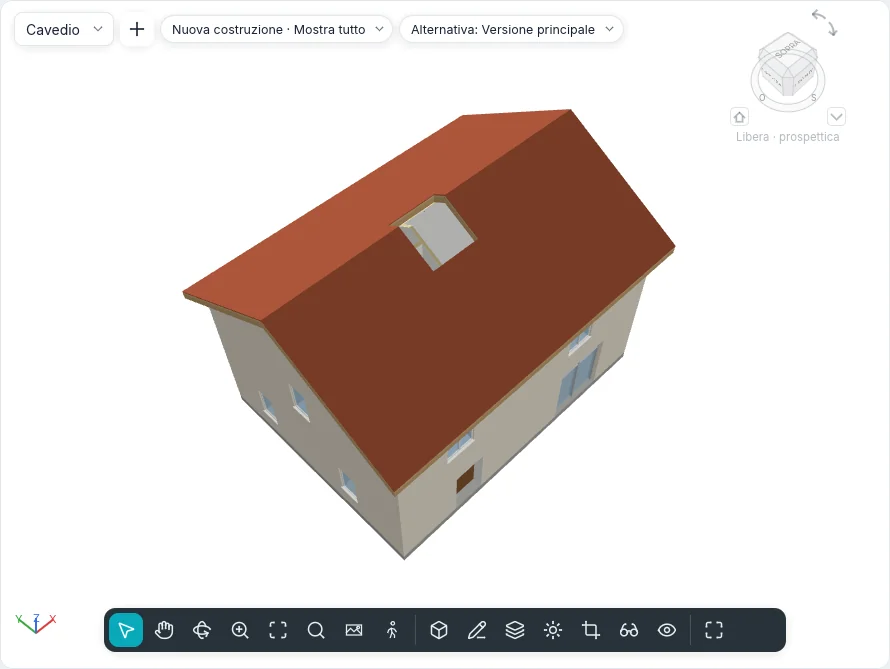

Aperture
Il gruppo Aperture delle schede Modella e Strutture taglia fori che nulla riempie: in pavimenti, tetti e controsoffitti (Per faccia, Verticale, Abbaino), attraverso più livelli insieme (Cavedio) e nei muri (Nel muro). I cinque strumenti hanno gli stessi nomi nei due stili dell'interfaccia e nella modalità touch, e anche la riga di comando li esegue.
Un'apertura è un elemento a sé: si seleziona, si modifica, si sposta e si elimina come ogni altro, e va dove va il suo ospite. Un anello disegnato dentro il disegno di un pavimento, di un tetto o di un controsoffitto resta un'apertura del contorno di quell'elemento, come prima.
Aperture in pavimenti, tetti e controsoffitti
| Strumento | Come taglia |
|---|---|
| Per faccia | Perpendicolare alla faccia scelta: su un tetto inclinato i lati del foro seguono la pendenza, attraverso tutti gli strati |
| Verticale | A piombo, attraverso tutto l'elemento, qualunque sia la sua pendenza |
| Abbaino | A piombo attraverso il tetto principale, dentro il contorno scelto dai muri e dal tetto dell'abbaino |
- Avvia lo strumento in una pianta (una pianta dei controsoffitti per i controsoffitti) o in una vista 3D. Avviato in una sezione o in un prospetto, Vai a vista propone le piante.
- Porta il cursore sull'elemento: si evidenzia in arancione. Con Per faccia, premi TAB per scegliere la sua faccia inferiore invece di quella superiore (in 3D, la faccia che indichi da sotto è quella inferiore). Abbaino propone solo tetti.
- Fai clic. Si apre la modalità di disegno, Crea contorno apertura, con il gruppo Disegna: Linea, Rettangolo, Seleziona linee e le altre forme. Abbaino offre solo Seleziona bordi del tetto/muro: si evidenzia solo ciò che può delimitare un abbaino (la faccia laterale di un muro, il tetto dell'abbaino, un pavimento, un bordo del tetto principale). Scegli le facce interne dei muri dell'abbaino e il suo tetto: le linee non devono incontrarsi, l'apertura che delimitano si vede tratteggiata, tagliata a piombo lungo i muri e fino a dove il tetto principale sale sopra la faccia inferiore del tetto dell'abbaino. Li segue quando i muri si spostano o i tetti cambiano.
- Disegna anelli chiusi, poi Termina modalità di modifica. Le linee aperte o che si incrociano sono rifiutate con un messaggio, e il disegno resta aperto.
Un anello che attraversa il bordo dell'elemento lo intaglia; un anello tutto fuori non taglia nulla ed è escluso, con un messaggio.
Un pavimento, un tetto o un controsoffitto selezionato ha anche Apertura ▸ Verticale nella sua scheda contestuale: il disegno si apre subito su di esso, senza sceglierlo di nuovo.
Cavedi
Cavedio taglia tutti i pavimenti, i tetti e i controsoffitti fra due altezze.
- Avvia Cavedio in una pianta (o in 3D, sul livello attivo). Si apre la modalità di disegno, Crea disegno apertura cavedio.
- Con Linea di contorno scelta, disegna il contorno del cavedio come anelli chiusi (Rettangolo, Linea, Seleziona muri…).
- Con Linea simbolica scelta, disegna le linee mostrate con il cavedio nelle piante, per esempio le sue due diagonali.
- Fai clic su Termina modalità di modifica.
Il cavedio comincia al livello della pianta in cui è stato disegnato e arriva al livello successivo verso l'alto (se sopra non c'è un livello, è alto 3 m). Taglia le solette solo entro la sua altezza: una soletta in cui si ferma conserva la parte sopra o sotto di esso. Muri, scale, colonne e componenti non sono tagliati.
Ogni pianta il cui piano di taglio è dentro l'altezza del cavedio ne mostra il contorno e le linee simboliche; la pianta di un pavimento che taglia mostra il foro. È un solo elemento: spostato in una pianta, si sposta su tutti i livelli.
Selezionato in una sezione, il cavedio appare come un parallelepipedo trasparente: trascina le frecce in alto e in basso per cambiarne l'altezza; vicino a un livello si fermano su di esso.
| Proprietà | |
|---|---|
| Livello di base, Scostamento alla base | Dove comincia il cavedio |
| Livello superiore | Un livello, o Non collegata |
| Scostamento in alto | Solo con un livello superiore |
| Altezza libera | Solo quando non collegata |

Aperture nei muri
Nel muro taglia un rettangolo attraverso tutti gli strati di un muro, anche curvo.
- Apri un prospetto o una sezione che vede il muro, o una vista 3D. Da una pianta, Vai a vista propone i prospetti e le sezioni.
- Fai clic sul muro: si evidenzia in arancione. Le facciate continue non sono proposte.
- Fai clic su un angolo, poi su quello opposto. Il rettangolo segue il cursore con le sue dimensioni e le sue distanze dall'inizio e dalla base del muro; l'apertura si crea al secondo clic e resta selezionata.
Su un muro curvo il foro segue l'arco. In pianta il muro è tagliato dove il piano di taglio attraversa l'apertura, senza risvolti degli strati.
Selezionata in un prospetto o in una sezione, l'apertura ha quattro maniglie sui bordi: trascinale per ridimensionarla; trascina al suo interno per spostarla lungo il muro (non lo lascia mai). Spostare, copiare o eliminare il muro porta con sé le sue aperture. Per un foro rotondo o poligonale usa invece Modifica contorno del muro.
Le sue proprietà sono quelle di un cavedio, più Larghezza e Altezza.
Proprietà, abachi e file
Ogni apertura ha Commenti e Contrassegno, e mostra Fase di creazione e Fase di demolizione del suo ospite, in sola lettura. Per faccia, Verticale e Abbaino mostrano anche il loro Ospite e come tagliano (Taglio).
Area e Volume di pavimenti, tetti, controsoffitti e muri escludono le aperture, nelle
Proprietà, negli abachi e nel computo dei materiali. L'esportazione IFC scrive ogni taglio come un
IfcOpeningElement che svuota il suo ospite (un cavedio ne dà uno a ogni elemento che taglia);
l'importazione IFC riporta le aperture che nessuna porta o finestra riempie ad aperture dei loro
pavimenti e muri.
Visibilità e grafica elenca Aperture cavedio, con Linee dei simboli, e Aperture fra le categorie del modello.
Dalla riga di comando: shaft, wallopening, faceopening, vertopening e dormeropening
(vedi Riga di comando e MCP).
Non ancora in BIMopen
Le aperture in travi, controventi e pilastri, una fondazione continua interrotta sotto un'apertura nel muro, i cavedi attraverso i solidi topografici e le aperture nei tetti da estrusione arrivano con quegli elementi.